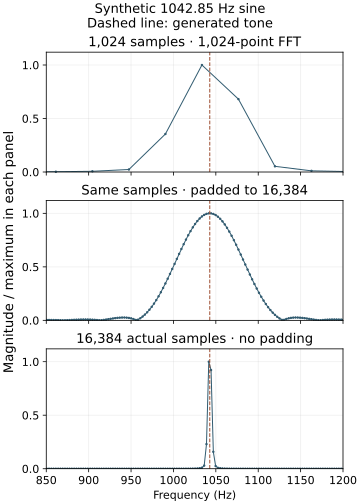

Audio frequency measurements: FFT bins and peaks
Reproduce the 1033.59375 Hz bin label with a synthetic tone and distinguish padding, recorded duration, and frequency estimates.
On this page
A number on a spectrum’s horizontal axis can come from the analysis settings rather than the recording. Before interpreting a frequency as 1033, 3301 or a rune value, distinguish the frequency grid, the strongest measured bin, and an estimate of the underlying tone.
An FFT (fast Fourier transform) computes how a finite set of sound samples contributes at a grid of frequencies. A bin is one grid position. Hz means cycles per second; the sample rate counts recorded samples per second. A window weights the samples before the transform; the Hann window used below tapers the ends of the excerpt.
Why 1033.59375 Hz appears
For sample rate fs and FFT length N, bin k has center frequency k × fₛ / N, with k = 0 at zero frequency (DC). At 44,100 samples per second and N = 1,024, adjacent bins are 43.06640625 Hz apart. Bin 24 is therefore 1033.59375 Hz. This is a property of the grid: it exists even when the input is silence, although silence has no nonzero spectral peak. See the NumPy frequency-bin definition.
sample_rate = 44100
fft_length = 1024
print(sample_rate / fft_length) # 43.06640625
print(24 * sample_rate / fft_length) # 1033.59375Selecting that bin as the largest means its measured magnitude exceeds the other bins under the chosen procedure. It does not mean the physical tone is exactly 1033.59375 Hz, and rounding or truncating the label to 1033 is an additional choice.
A tone that produces the same label
The following demonstration generates a pure 1042.85 Hz sine wave at 44.1 kHz. It does not read an archived audio file. The frequency was selected to illustrate the reported numerical issue, not measured from Cicada’s music.

| Recorded samples | FFT length | Largest bin | Its frequency (Hz) |
|---|---|---|---|
| 1,024 | 1,024 | 24 | 1033.59375 |
| 1,024 | 16,384, zero-padded | 387 | 1041.668701171875 |
| 16,384 | 16,384 | 387 | 1041.668701171875 |
The first row reproduces the surprising label with a tone whose frequency we know is different. The later rows still report bin centers, not an interpolated frequency estimate. Matching a label therefore cannot, by itself, identify an intended number in an unknown recording.
More bins versus more recorded sound
The first two rows use the same 1,024 signal samples, about 23.22 milliseconds. Padding appends zeros after windowing and samples the same short-record spectrum more densely. It adds no recorded sound. The third row contains about 371.52 milliseconds of actual sine-wave samples and has a narrower main peak. These are different changes even though both later rows use the same FFT length.
Window choice affects the main peak and leakage into nearby frequencies. Frequency-grid spacing is not a complete statement of the ability to separate nearby tones. The SciPy spectral-analysis tutorial explains windowing, leakage and zero-padding. This example is deliberately a single stationary sine; music, overlapping notes and noise require additional care.
Reproduce the demonstration
Extract the reference-data bundle, then run from its root:
python -m pip install numpy
python scripts/fft_bin_demo.py
# Optional: regenerate the figure
python -m pip install matplotlib
python scripts/fft_bin_demo.py --plotThe complete script prints the generated frequency, sample rate, window, sample counts, FFT lengths, bin spacings, maxima and NumPy version. It performs no download or audio decoding. The figure uses each spectrum’s own maximum, so its vertical scales must not be used to compare signal energy.
What a recording-based test needs
Keep the exact audio file and its checksum, decoder and version, channel selection, sample rate, segment start and length, window, FFT length, preprocessing, and peak-selection rule. A screenshot without these settings cannot establish a repeatable measurement. If you change the segment, window or frequency tolerance while looking for a familiar number, retain those attempts in the search bounds.
No historical audio peak, musical cipher or absence of hidden content has been verified here. This is a synthetic control for a measurement pitfall. A proposed note-to-rune mapping needs its own symbol definitions, grouping rules and reversible operation; a frequency-axis label does not supply them. See types of experimental evidence and file verification.